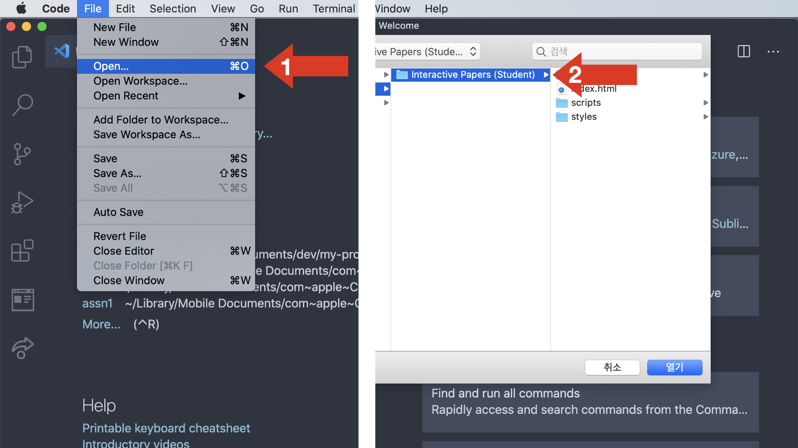
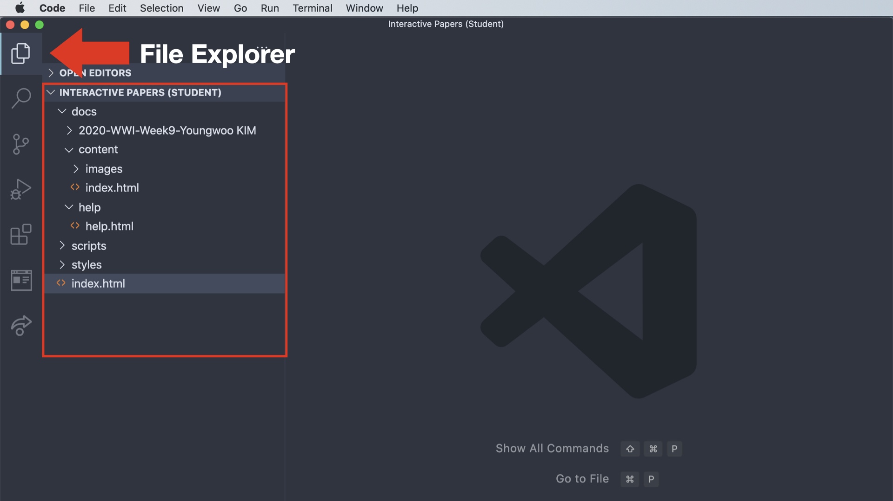
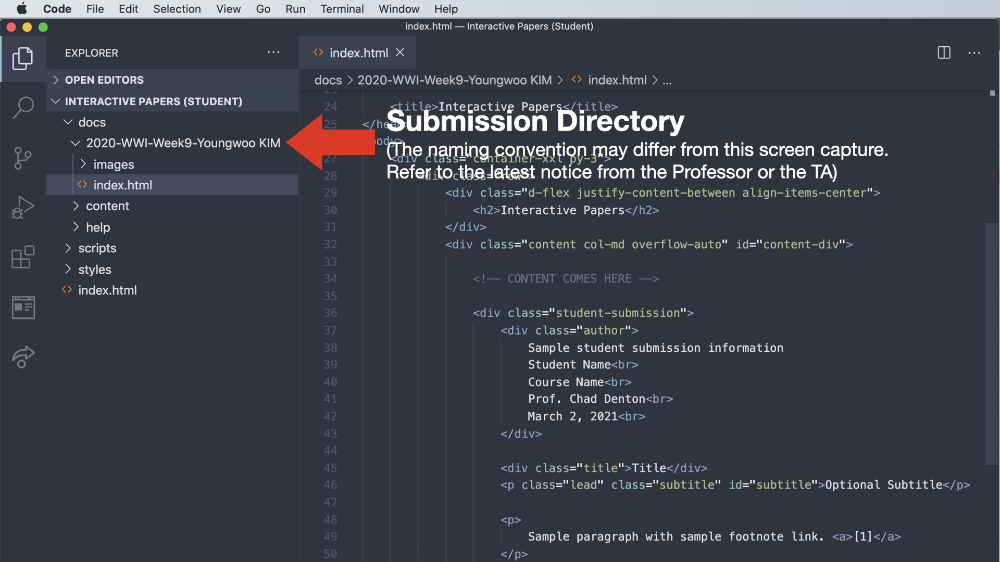
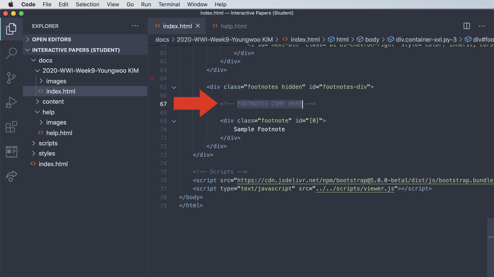

Interactive Papers
Welcome to Interactive Papers
Academic paper reader
What is Interactive Papers?
Interactive Papers is a reader app for academic papers. You can view references without scrolling away or leaving the page, helping you stay focused on the content.
Reading
Viewing Footnotes
References, or "footnotes" are clickable, and are different from other 'nomral' text by having a dark gray font color and a bold font face. Try clicking on the text '[1]' at the end of this sentence, and the contents of the footnote will appear. [1]
Finding Where a Footnote was Referenced in a Document
For some documents, all the footnotes for this content are located at the very bottom of this page. Clicking on the footnote will bring you to the point in the original text where the footnote is referenced.
Using a Code Editor
Editing Interactive Papers can be done using any plain text editor (Notepad, TextEdit, ...), but we strongly recommend that you use a code editor, since it is much easier to edit code. We will be using Visual Studio Code(Download Link) in this tutorial.
Opening the working directory in your code editor
Click "File" > "Open..." and open the folder that you just downloaded.
If everything was successful, you should see the contents of the folder on the sidebar on the left side of the window. If the sidebar is hidden, click on the "File Explorer" button on the top left corner.
Double click on a file in the file browser to open the file and start editing.
Tutotrial
This tutorial will guide you through the basics of editing content for Interactive Papers.
0. Preparations
1) You should see 3 folders ('docs', 'scripts', 'styles') and 1 file('index.html') in the folder you just downloaded.
2) Navigate to the 'docs' folder, and make a copy of the 'content' folder inside the docs folder.
3) Name the copy of the folder “(Year)-(CourseName)-(Week#)-(Firstname)-(LASTNAME)”[2], but you cannot include spaces or special characters.
4) From now, we will call this folder the 'submission folder,' since you will be submitting this folder only later when you submit your work. This is also the only folder that you are allowed to change the contents of the files contained within.

5) Copy + paste your content to the correct position inside the 'index.html' in your submission folder.
The position to paste in your content is marked with the comment "<!-- CONTENT COMES HERE -->".

1. Turning plain text to HTML
Let's say you wrote the following text. For the computer to format the text correctly, we need to add HTML tags.
War seemed imminent in 1792 Europe. The revolutionary ideals of France began to spread to other countries. Britain’s monarchy was shaky and it had everything to lose by losing ground to the Revolution. Therefore, in a war of ideology, Britain went to war against France. The Contrast leaflet is evidence of the rising liberalist movement in Britain. I will analyze the "The Contrast/Which is Best," in order to place the pamphlet in the historical context.
The leaflet features two figures, one representing a peaceful Britannia and the other a Medusa-like Marianne. The figure of Britannia wears a full dress with a red cape, but the more noticeable part is her helmet, spear and shield. The whole wardrobe is vaguely reminiscent of Athena, who, in Greek mythology, provides the main tool for Perseus to kill Medusa. Britannia also holds the scales in her left hand, a traditional symbol of justice. She holds the Magna Carta, the constitution of England in her right hand. To Britannia's right, a ship of the line proudly sits in the harbor, flaunting the power of the English navy. A golden lion sits at her feet, a symbol of the British monarchy. [2]
1. The entire content section(what you just pasted in. not anything else.) should be surrounded in "<div>" tags with the class of "student-submission".
2. Author information (first 4 lines) should be surrounded in "<div>" tags with the class of "author".
3. Each paragraph should be wrapped in "<p>" tags.
4. Insert <br> tags in place of line breaks(the 'enter' key)
Code (index.html):
2. Add Footnote Links to Writing
Now, let's make the annotations clickable(or interactive!). Surround footnote markers with "<a>" tags to create links to footnote content.[3]
Code(index.html):
3. Write Footnote Content
Now, we need to write the actual contents of the footnotes. Scroll down until you see the comment '<!-- FOOTNOTES COME HERE -->', and use the code template below to create contents for your footnotes. All footnotes must be contained inside the div with a class of 'footnotes'
Code (index.html):
The class attribute of the <div> should be "footnote", and the id attribute shoudl be the footnote ID. Anything can go into the contents of a footnote, including images and custom HTML code.
Complete!
Congratulations! Now you can create, edit, and customize your writing with annotations. Read more below for advanced tutorials, or type in 'sample' for the content name field in the navigation bar at the top of the screen for the full sample text.
Documentation
Footnotes
Each footnote has an ID (unique)[4], display text and content.
Footnote ID
A footnote ID can be anything, as long as it is: a) unique across a document, and b) plain text(no html code).[4]
<!-- Simplest form: footnote ID surrounde by <a> tags -->
<a>[1]</a>
<!-- Any unique, plaintext footnote ID is fine -->
<a>001</a>
<a>second</a>
<a>[External Source 03]</a>
Display Text
By default, Interactive Papers assumes the display text is the footnote ID. If you want the ID and display text to be different (for instance, to custom style your annotations using HTML code), specify the footnote ID using the "data-ip-footnote-id" attribute in the <a> tag.
<!--Default: Display text (text between a tags) is the footnote name-->
<a>[5]</a>
<!-- Custom Styling: Superscript -->
<a data-ip-footnote-id="[5]"><sup>[5]</sup></a>
<!--Display text can be totally different from the footnote ID -->
<a data-ip-footnote-id="[6]"><sup>Footnote 6</sup></a> <!-- Good (O) -->
<!--Display text doesn't have to be unique, only the ID should be unique.-->
<!-- Case A: This is fine (O) -->
<a data-ip-footnote-id="[7]">[7]</a>
<a data-ip-footnote-id="[8]">[7]</a>
<!-- Case B: This causes an error. (X) -->
<a data-ip-footnote-id="[9]">[9]</a>
<a data-ip-footnote-id="[9]">[10]</a>
[IMPORTANT] A footnote ID must be unique(one and only) across an entire document.
Inserting links (normal <a> tags)
Interactive Papers assumes <a> tags without href and class attributes to be a footnote, and will process these as the web page is rendered to act as an internal footnote link. However, it is possible to use the traditional <a> tag with href specified to point it to an external link. If you specify a href attribute to an <a> tag, Interactive Papers will not process it as a footnote, but just treat it as a traditional link tag.
<!-- This is considered as a footnote -->
<a>[1]</a>
<!-- This will be considered as an external link. -->
<a href="https://www.someurl.com/some/good/source">[2]</a>
Inserting Images
If your submission contains images, whether in your main text or your footnotes, save all your images there.
Use <img> tags
Add the following code where you want your images to go.
The 'src' attribute specifies the location and file name of the source image file. The 'alt' is text that is displayed 'alt'ernatively when for some reason the computer cannot find the image file that you specified in the 'src' attribute. It can be the image file name, or it could be a short description of the image.
The image can be any image file saved on your computer, or on the internet as long as it is a valid path to a file or a URL to an image.
* The image file name must not contain any spaces or special characters.[5]